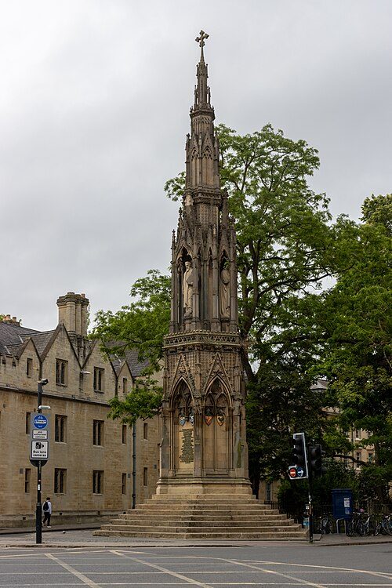

This map shows 20 of the most-searched sights in Oxford as photo spots, ranked by how often people search for them: Bodleian Library, Christ Church, Ashmolean Museum, Radcliffe Camera and Oxford Union lead the list. Every spot has a pin on the subject and a phone icon showing where to stand, with tips for shooting it on your phone: which lens to use, how to frame it, a settings tip and the best time of day. Directions and Navigate buttons take you to the standing point on foot or by public transport. 3 spots are free to view; the full map is for members.
The 3 free photo spots
2Christ Church, Oxford
Christ Church is one of the best-known colleges of the University of Oxford, and its main gate is the classic place to start. Above the entrance arch rises Tom Tower, designed by Sir Christopher Wren, and behind the gate lies Tom Quad, the largest quadrangle in Oxford. Henry VIII founded the college in 1546. It is unusual because its chapel is also Oxford's cathedral. The buildings have appeared in films such as Harry Potter, which helps explain why it is the most popular Oxford college for tourists.
From the pavement on St Aldate's, directly opposite the Tom Gate entrance, you get a straight-on, symmetrical view. The full height of the tower sits above the arch, with the wings either side. It is a simple, balanced picture that works well on a phone, and you only need to photograph from outside. If you want a change, Pembroke Square gives a view of the entrance and tower framed by neighbouring buildings. Christ Church Meadow shows the towers and the cathedral spire rising behind open grass, sometimes with cattle in the foreground.
A small piece of trivia: the bell in the tower, Great Tom, rings 101 times each evening at 9:05 pm. St Aldate's is a busy road with buses, so cross with care, and stay on the pavement and watch for buses while framing.
Where it is: Christ Church is in central Oxford, on the east side of St Aldate's, with Christ Church Meadow stretching out behind it. The Tom Gate entrance faces the street.
Shooting it on your phone
Lens: Start with the default lens (1x) for the full gate and tower. Switch to ultra-wide (0.5x) if passers-by or parked vehicles stop you stepping back far enough. Use telephoto (2x or more) for the upper stages of the tower.
Where to stand: Stand on St Aldate's (directly opposite the Tom Gate entrance, on the pavement across the road). A head-on, symmetrical view of the full height of Tom Tower above the college's main gate, with the entrance arch and flanking wings below it. On St Aldate's, on the pavement directly opposite the Tom Gate entrance, looking east across the road to the gate and the tower above it. Stay on the pavement and cross carefully, as buses use this road.
Framing: Turn on gridlines and place the arch on the centre line so the two wings balance left and right. Hold the phone level, because tilting it upwards makes the tower lean inwards. Keep the whole tower in the shot, with a little sky above the top. For a different view, try Pembroke Square or Christ Church Meadow.
Settings tip: Tap on the stonework to set focus, then drag the exposure slider down slightly if the sky is bright, so the tower keeps its colour. Take a few frames, as people often walk through the gateway.
Best time: Go early in the day for fewer people on the pavement. If you stay until the evening, use night mode with the phone braced against a wall or post.
3Ashmolean Museum
The Ashmolean Museum stands on Beaumont Street, in the heart of Oxford. Its grand classical front, with tall columns and a wide set of steps, makes it one of the easiest buildings in the city to photograph. The building you see today dates from 1841 to 1845 and was designed by Charles Cockerell. It is Britain's first public museum, a title that goes back to its first home on Broad Street, which opened in 1683 to house the collection Elias Ashmole gave to the University of Oxford. Part of the same building, on the corner with St Giles', is the Taylor Institution, which uses the same Ionic style, so the long frontage has a pleasing rhythm of columns that suits a wide photo. The stone is a calm, even colour and the symmetry is strong, so a straight-on shot looks tidy and balanced with very little effort. The building is large, so the key is to decide whether you want the whole frontage or just a detail, such as the columns, the steps or the entrance. Stand back far enough to keep the vertical lines straight, and watch for people on the steps, who add a sense of scale. Inside, the museum holds art and archaeology, but this spot is about the outside view. Check the official site before you go if you plan to step inside, as access and any photography rules can change.
Where it is: On Beaumont Street in central Oxford, at the corner with St Giles', with the Taylor Institution forming one wing of the same building.
Shooting it on your phone
Lens: Start with the default lens (1x) for the full frontage, switch to ultra-wide (0.5x) if you cannot step back far enough, and use telephoto (2x-5x, depending on your phone) for the columns and carved details.
Where to stand: Stand right at the subject: the phone icon on the map marks the spot. Move back across the street a little if you want the whole front in one shot.
Framing: Turn on gridlines and line the roofline up with a horizontal line so the building does not lean. Keep the phone level and at chest height to limit the converging of the vertical lines. Try one wide shot with the steps in the foreground, then a closer one of the column rows with the telephoto.
Settings tip: Tap the front of the building to set focus, then slide the exposure down slightly if the sky is bright and washes out the stone. Use ultra-wide only when you really need it, as it can bend the edges of the building.
Best time: Soft, even light on an overcast day or in the morning or late afternoon usually flatters the stone; a quieter time of day makes it easier to get a clear view of the steps.
7Martyrs' Memorial, Oxford

The Martyrs' Memorial is a tall stone Gothic monument that stands in the middle of a busy Oxford junction, where St Giles', Magdalen Street and Beaumont Street meet, just west of Balliol College. It remembers Thomas Cranmer, Hugh Latimer and Nicholas Ridley, the three Protestant churchmen executed in the 1550s. George Gilbert Scott designed it, and it was finished in 1843. He modelled it on the medieval Eleanor crosses, which is why it looks a little like a cathedral spire set down in the street. Henry Weekes carved the three statues, and the monument is listed at Grade II*. The Oxford Preservation Trust restored it, and the finished work was unveiled in January 2003.
It photographs well because the pointed spire and carved detail stand out against the plainer buildings around it, and the Ashmolean sits across the road on Beaumont Street. From the junction you can fit the monument, the statues and the street scene into one frame. The actual execution site is close by in Broad Street and is marked by an iron cross sunk into the road, so it is worth a look if you are walking on.
The junction is busy with buses and scooters, so frame your shots carefully and keep an eye on the traffic. Trees in the graveyard on the memorial's own side can block the view, so the junction gives the clearest picture.
Where it is: In central Oxford, at the southern end of St Giles', where Magdalen Street and Beaumont Street meet, just west of Balliol College and opposite the Ashmolean.
Shooting it on your phone
Lens: Start with the ultra-wide (0.5x) to get the whole monument and the street around it in one frame. Switch to the default lens (1x) for a more natural look, and use the telephoto (2x-5x, depending on your phone) for the statues and carved detail.
Where to stand: Stand at the corner of St Giles' and Beaumont Street (the junction at the south end of St Giles', where Magdalen Street also meets). The memorial standing at the crossroads with the Ashmolean and the street scene around its base. Stand on St Giles', at the junction at the south end where Magdalen Street also meets. The memorial rises a little to the south-east of you, with the Ashmolean and the street scene around its base. From here you see the monument's full Gothic height with the Cranmer statue facing you, and the street opening up towards it.
Framing: Turn on the gridlines and line the spire up with a vertical line so it does not lean. Keep the base and some of the street in the frame, as the junction gives the monument its setting. For a second view, try Magdalen Street, where the memorial is seen from that side with the Balliol College buildings behind you. Wait for gaps in the traffic and stay on the pavement.
Settings tip: Tap the stone on your screen to set focus, then drag the exposure slider down a little if the sky is washing out. Use the telephoto for the statues rather than walking into the road.
Best time: Early in the morning is likely to be quieter, with fewer people and less traffic in the shot.
17 more spots for members
These spots are on the map as grey numbered pins. Where to stand, the phone tips, photos and directions for them come with Explorer membership.
- 1Bodleian Library · members
- 4Radcliffe Camera · members
- 5Oxford Union · members
- 6Pitt Rivers Museum · members
- 8Sheldonian Theatre · members
- 9Oxford University Museum of Natural History · members
- 10Oxford Botanic Garden · members
- 11Covered Market, Oxford · members
- 12Bridge of Sighs, Oxford · members
- 13Oxford Castle · members
- 14Magdalen Bridge · members
- 15University Church of St Mary the Virgin · members
- 16Carfax Tower · members
- 17Christ Church Meadow · members
- 18Magdalen College, Oxford · members
- 19Broad Street, Oxford · members
- 20New College, Oxford · members
Get every spot with Explorer membership
Explorer opens every spot on every map in the library: where to stand, how to frame it on your phone and how to get there, plus the Xdatrys Maps app with maps saved on your phone for use without signal. $9.99 a month or $59.99 a year; cancel any time.
Join Explorer Compare free and Explorer
Not ready to join?
Get Pocket Lens, our free daily smartphone travel photography newsletter.
Free, and you can unsubscribe at any time. If the form does not show, sign up on our newsletter page.
Questions
What are the top photo spots in Oxford?
The first three on this map are Bodleian Library, Christ Church and Ashmolean Museum. They are ranked by how often people search for them. The full map has 20.
Where should I stand to photograph Christ Church?
Stand on St Aldate's (directly opposite the Tom Gate entrance, on the pavement across the road). Start with the default lens (1x) for the full gate and tower.
When is the best time to photograph the Ashmolean Museum?
Soft, even light on an overcast day or in the morning or late afternoon usually flatters the stone; a quieter time of day makes it easier to get a clear view of the steps.
How do I get to the Martyrs' Memorial?
No railway station or tram stop is listed for this spot, so start from the centre of Oxford and walk to the junction of St Giles', Magdalen Street and Beaumont Street.
Credits
Map data © OpenStreetMap contributors (ODbL); base map built with Protomaps from OpenStreetMap data. Photos from Wikimedia Commons, credited under each photo with their licence. Background reading for the free spots: Christ Church, Oxford, Ashmolean Museum, Martyrs' Memorial, Oxford (Wikipedia, CC BY-SA). Access rules and opening times change: check before you go.